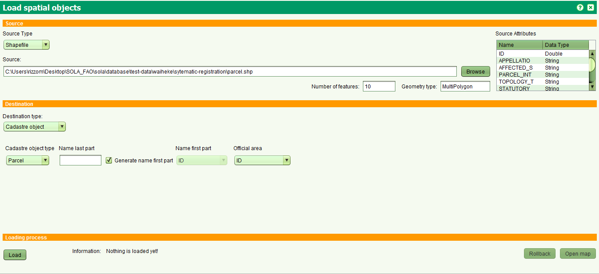

Chargement Massif des Objets Spatiaux
L'interface est divisée en trois parties.
- Source
- Destination
- Chargement
Source
In this part of the screen, the spatial data source is defined. At the moment, in the list is only Shapefile.
You can choose a Shapefile (.shp) by clicking in Browse button.
In that moment, the shapefile is read and in the upper part are given: Fields of the shapefile, the type of the geometry, the number of features found.
Destination
Pour cette partie de l'écran, le type de destination est défini. En ce moment, il y en a deux:
- Objet Cadastre.
Ceci est sélectionné si l'utilisateur souhaite charger des objets cadastre comme les parcelles, bâtiments, etc. Le type de l'objet cadastre potentiel est lu depuis la table cadastre.cadastre_object_type.
De plus, pour ce type de destination, vous devez:
- entrer la dernière partie,
- for the first part must give which field in the source will be used to get the first part or if the first part will be generated
- for the official area must give the field in the source as well.
- Autre Object
This is selected if you want to upload other kinds of objects like road, control points, villages, etc.
Further, input the type of the object and which field in the source will be used for the label.
Loading process
By clicking the button Load, first is validated if the source and destination is filled properly and then the features of the source are converted in objects and then they are sent to the server for processing and storage.
During this time, a progress bar appears at the taskbar.
At the end, a message will appear if the upload is finished.
Cadastre change can be called only for features that are not loaded successfully.
By clicking the button Rollback it is possible to rollback the whole loading.
By clicking the button Open Map for all kinds of objects, the map control can be called and zoomed where the features are added.

Voir aussi